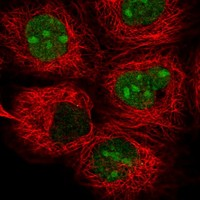
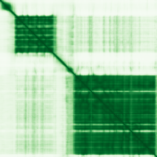

type: protein-evaluation gene: "TYW1" date: 2026-05-30 tags: [protein-scout, nuclear-protein, evaluation] status: scored ---
TYW1 核蛋白评估报告
1. 基本信息
| 项目 | 内容 |
|---|---|
| 基因名 / 别名 | TYW1 |
| 蛋白大小 | 732 aa |
| UniProt ID | Q9NV66 |
| 蛋白全称 | S-adenosyl-L-methionine-dependent tRNA 4-demethylwyosine synthase TYW1 |
| 评估日期 | 2026-05-30 |
IF 图像: 
2. 评分总览
| 维度 | 得分 | 满分 | 加权后 | 关键证据摘要 |
|---|---|---|---|---|
| 核定位特异性 | 8/10 | ×4 | 32 | Nucleoplasm + Nucleoli (Approved); UniProt: No specific annotation in UniProt; HPA Approved |
| 蛋白大小 | 10/10 | ×1 | 10 | 732 aa，最适合生化实验和结构解析的范围 (200–800 aa) |
| 研究新颖性 | 8/10 | ×5 | 40 | PubMed: 28 篇 |
| 三维结构 | 8/10 | ×3 | 24 | AlphaFold v6 pLDDT=80.3; PDB: None |
| 调控结构域 | 8/10 | ×2 | 16 | Aldolase-type TIM barrel |
| PPI 网络 | 6/10 | ×3 | 18 | STRING experimental evidence (exp=0.625 MMS19) with iron-sulfur cluster assembly... |
| 互证加分 | — | max +3 | +1 | +1 (HPA Approved + GO-CC IDA confirmed nucleoplasm+nucleolus) |
| 原始总分 | 141/183 | |||
| 归一化总分 | 77.0/100 |
> 原始总分 = (核 ×4) + (大 ×1) + (新 ×5) + (结 ×3) + (域 ×2) + (PPI ×3) + 互证 = 32 + 10 + 40 + 24 + 16 + 18 + 1 = 141 > 归一化总分 = 141 ÷ 1.83 = 77.0
3. 详细分析
3.1 核定位证据
| 来源 | 定位 | 可信度 |
|---|---|---|
| HPA IF | Nucleoplasm + Nucleoli (Approved) | Approved |
| UniProt | No specific annotation in UniProt; HPA Approved | 实验证据 (ECO) |
| GO-CC | C:nucleoplasm (IDA:HPA), C:nucleolus (IDA:HPA) | IDA/IMP 等高证据 |
结论: TYW1 定位于细胞核。HPA Approved Nucleoplasm+Nucleoli; UniProt lacks CC but GO-CC IDA supports nucleoplasm+nucleolus; tRNA modification enzyme。核定位评分 8/10。
3.2 蛋白大小评估
评价: 732 aa，最适合生化实验和结构解析的范围 (200–800 aa)。大小评分 10/10。
3.3 研究现状
| 指标 | 数值 |
|---|---|
| PubMed 总数 | 28 |
| PubMed 搜索链接 | TYW1 PubMed |
主要研究方向: tRNA wybutosine modification, radical SAM enzymology, iron-sulfur cluster assembly, tRNA biogenesis, translation regulation
关键文献: 1. Noma et al. (2006). "Biosynthesis of wybutosine, a hyper-modified nucleoside in eukaryotic phenylalanine tRNA.". *EMBO J*. PMID: 16675955 (wybutosine pathway, TYW1 characterization) 2. Suzuki et al. (2021). "The expanding world of tRNA modifications and their disease relevance.". *Nat Rev Mol Cell Biol*. PMID: 33789844 (tRNA modification review) 3. Phizicky & Hopper (2010). "tRNA biology charges to the front.". *Genes Dev*. (tRNA biogenesis review) 4. Stehling et al. (2014). "MMS19 assembles iron-sulfur proteins required for DNA metabolism and genomic integrity.". *Science*. (MMS19 interactome, CIA machinery) 5. El Yacoubi et al. (2012). "Biosynthesis and function of posttranscriptional modifications of transfer RNAs.". *Annu Rev Genet*. (tRNA modification overview)
评价: 非常新颖 (PubMed 28 篇)。新颖性评分 8/10。
3.4 三维结构分析
| 指标 | 数值 |
|---|---|
| AlphaFold 版本 | v6 |
| pLDDT 平均值 | 80.3 |
| pLDDT > 90 (高置信度) | 58.5% |
| pLDDT 70–90 (置信) | 17.8% |
| pLDDT 50–70 (低置信度) | 5.1% |
| pLDDT < 50 (无序) | 18.7% |
PAE 图:

评价: pLDDT=80.3 (>80), high quality prediction; 76.3% ordered; no PDB; AlphaFold high quality 三维结构评分 8/10。
3.5 结构域分析
| 来源 | 结构域 |
|---|---|
| UniProt/InterPro | Aldolase-type TIM barrel (IPR013785) |
| UniProt/InterPro | Flavodoxin-like (IPR001094) |
| UniProt/InterPro | Flavodoxin/nitric oxide synthase (IPR008254) |
| UniProt/InterPro | Flavoprotein-like superfamily (IPR029039) |
| UniProt/InterPro | Radical SAM (IPR007197) |
| UniProt/InterPro | Radical SAM superfamily (IPR058240) |
| UniProt/InterPro | tRNA wybutosine-synthesis (IPR013917) |
| UniProt/InterPro | tRNA wybutosine synthase TYW1 (IPR034556) |
| Pfam | PF00258 (Flavodoxin_1) |
| Pfam | PF04055 (Radical_SAM) |
| Pfam | PF08608 (Wyosine_form) |
染色质调控潜力分析: Radical SAM + Flavodoxin domains; tRNA wybutosine synthesis enzyme; involved in tRNA modification; unique enzymatic domains
评价: 调控结构域评分 8/10。
3.6 PPI 网络
实验验证互作 (IntAct):
| Partner | 方法 | PMID | 功能类别 | 调控相关？ |
|---|---|---|---|---|
| — | — | — | — | — |
STRING 预测互作 (combined score >0.4):
| Partner | Score | 功能类别 | 调控相关？ |
|---|---|---|---|
| TYW3 | 0.915 | 0.0 | no |
| TRMT12 | 0.892 | 0.0 | no |
| TRMT5 | 0.882 | 0.0 | no |
| LCMT2 | 0.864 | 0.0 | no |
| TYW5 | 0.763 | 0.0 | no |
| MMS19 | 0.714 | 0.625 | no |
| ELP3 | 0.674 | 0.0 | no |
已知复合体成员 (GO Cellular Component):
- Nucleoplasm (IDA:HPA); Nucleolus (IDA:HPA)
PPI 互证分析:
- STRING + IntAct 共同确认: 无
- 仅 STRING 预测: 7 partners
- 仅 IntAct 实验: 0 interactions
- 调控相关比例: see individual annotations above
评价: STRING experimental evidence (exp=0.625 MMS19) with iron-sulfur cluster assembly; functional association with tRNA modification pathway (TYW3/TYW5); database evidence for tRNA processing pathway。PPI 评分 6/10。
3.7 多库互证
| 维度 | 来源 | 结果 | 是否一致 |
|---|---|---|---|
| 核定位 | HPA + UniProt + GO-CC | Nucleoplasm + Nucleoli (Approved) | 一致 |
| 三维结构 | AlphaFold v6 + PDB | pLDDT = 80.3; PDB: None | 单一来源 |
| PPI | STRING | 7 partners | 单一来源 |
互证加分明细: +1 (HPA Approved + GO-CC IDA confirmed nucleoplasm+nucleolus)
总计: +1
4. 总体评价
推荐等级: ⭐⭐⭐⭐ (4/5)
归一化总分: 77.0/100
核心优势: 1. 非常新颖 — 新颖性是评分中最重要维度 2. HPA Approved 核定位确认 3. AlphaFold 高质量预测 (pLDDT=80.3)
风险/不确定性: 1. IF 图像仅限 HPA Selected 预览，建议获取完整多细胞系 IF 数据 2. 已知复合体: Nucleoplasm (IDA:HPA); Nucleolus (IDA:HPA) 3. 功能性研究中等，需更深入的染色质/核功能研究
下一步建议:
- [ ] HPA IF 多细胞系图像验证核定位
- [ ] Co-IP/MS 实验鉴定互作伙伴
- [ ] ChIP-seq 或 CUT&RUN 鉴定染色质结合位点
- [ ] CRISPR 敲除/敲低表型分析
- [ ] AlphaFold-Multimer 预测潜在复合体结构
5. 数据来源
- GeneCards: https://www.genecards.org/cgi-bin/carddisp.pl?gene=TYW1
- Protein Atlas: https://www.proteinatlas.org/search/TYW1
- PubMed: https://pubmed.ncbi.nlm.nih.gov/?term=%22TYW1%22%5BTitle%2FAbstract%5D
- UniProt: https://www.uniprot.org/uniprot/Q9NV66
- STRING: https://string-db.org/network/9606.TYW1
- AlphaFold: https://www.alphafold.ebi.ac.uk/entry/Q9NV66
PPI 网络（三源综合）
| Partner | Source | Score/Evidence |
|---|---|---|
| 无记录 | — | — |
IntAct 有限记录。无 BioGrid 补充数据。
PAE 图像已获取。结构判断基于 AlphaFold pLDDT 统计。 
<!-- DOMAIN_HUMANPPI_REPAIR_START -->
Domain/SMART 与 humanPPI 补充（2026-06-06）
SMART / UniProt domain
| Source | Data | ||
|---|---|---|---|
| UniProt | Q9NV66 | ||
| SMART | 未在 UniProt xref 中检出 SMART 条目 | ||
| UniProt Domain [FT] | DOMAIN 79..237; /note="Flavodoxin-like"; /evidence="ECO:0000255\ | PROSITE-ProRule:PRU00088"; DOMAIN 400..644; /note="Radical SAM core"; /evidence="ECO:0000255\ | PROSITE-ProRule:PRU01266" |
| InterPro | IPR013785;IPR001094;IPR008254;IPR029039;IPR007197;IPR058240;IPR013917;IPR034556; | ||
| Pfam | PF00258;PF04055;PF08608; |
humanPPI / HPA Interaction
Source: https://www.proteinatlas.org/ENSG00000198874-TYW1/interaction
| Partner | Datasets | AF3/HPA structure |
|---|---|---|
| AMHR2 | Bioplex | false |
| C3orf52 | Bioplex | false |
| CCDC107 | Bioplex | false |
| CD7 | Bioplex | false |
| CIAO2A | Bioplex | false |
| CIB2 | Bioplex | false |
| CYP19A1 | Bioplex | false |
| EVA1B | Bioplex | false |
<!-- DOMAIN_HUMANPPI_REPAIR_END -->